|
|||||
|
|||||
| 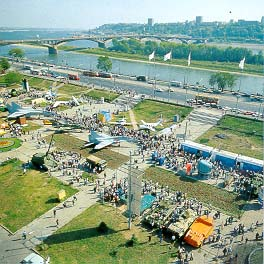 |
The city was closed to foreigners throughout the Soviet times due to its military significance. The famous MIG fighter jets are made here as well as submarines. Arzamas-16 (aka as Sarov, Kremlev) is a small town close to Nizhny Novgorod, which serves as the Russia's Federal Nuclear Research Center. This is where the first Russian atomic bomb was designed. On the left, picture of the Air Show. |
Volga & Oka Rivers
| 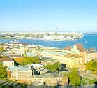 |
In previous centuries, Nizhny Novgorod was a commercial hub of Russia, located at the strategic confluence of the Oka and Volga rivers. The was an old saying: "Moscow is Russia's heart, St. Petersburg - head, and Nizhny Novgorod - pocket." Today, Nizhny Novgorod is one of the chief industrial cities of the Russian Federation. |
Life in Nizhny
Nizhny Novgorod is a very urban city. The vast majority of people live in 5-9 story apartment buildings and get around by public transportation, which includes a huge network of buses, trolleys, trams and metro. Most people have a private phone line and those who have computers typically have dial-up access to the Internet.
I grew up in a fairy remote area of Gorky -- Avtozavodskii Rayon. This area hosts the second largest automobile plant in Russia - GAZ. But the great part was that while we enjoyed all the conveniences of a city and lived in a 9 story apartment building, the forest and a couple of lakes were just a short walk away.
Bolshaya Pokvskaya street in the center of the city...
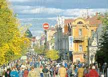
Quiet back street ...
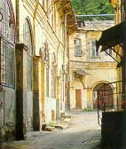
With its 14 universities
and approximately 100 research institutions, Nizhny Novgorod is one
of the key scientific centers of Europe.
Russia's Heartland
Nizhny Novgorod region is the cradle of a lot of Russian traditions.
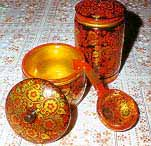 Semenovskaya rospis
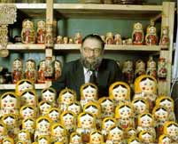 Matreshki
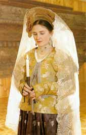 Traditional dress
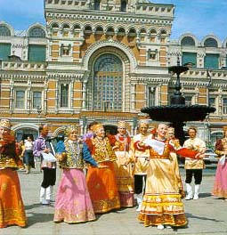 Holiday street festivities
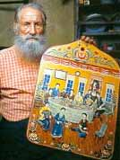 Gorodetskaya rospis
Even though during the Soviet times religion was largely suppressed a few churches have been preserved and are now being restored.
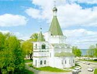
Architecture
Nizhny Novgorod has a lot of great traditional Russian architecture.
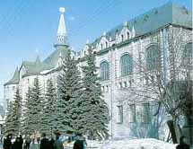 State bank
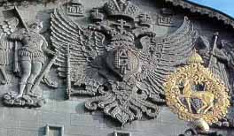
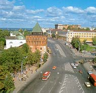 Minim and Pozharskii Square
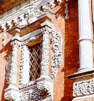 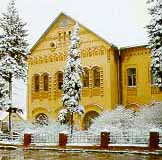
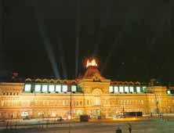 Yarmarka (trade fair) at night
Nizhny Novgorod Links In English
Unofficial Guide to Nizhny by a fan from UK
http://www.visitnizhny.com/index.php?lang=en
Welcome to Nizhny Novgorod!
www.unn.runnet.ru/nn/
Business Portal
www.innov.ru/english/Photos of the city
www.innov.ru/kosolapov/engVisitor's Guide
www.unn.runnet.ru/nn/guideLive WebCam With View of Gorky Square
www.nbdbank.ru/camera.htmlNizhny Novgorod State University
www.unn.ru/main_eng.htm
Nizhny Novgorod Links In Russian
Unofficial Guide to Nizhny by a fan from UK
http://www.visitnizhny.com
Internet Resource Portal
www.nnov.city.ruInformation about city and region
www.innov.ru/nnov/rus/index.htmPortal
www.nnov.ru/Business Portal
www.innov.ru/Another Business Portal
r52.ru/Nizhny Novgorod on-line
www.nn.ru/Official web site of Nizhny Novgorod administration.
www.admcity.nnov.ru/Server "Sendi-Info"
www.sci-nnov.ruInforis Internet center
www.inforis.ruForum "New Russia"
www.newrussia.nnov.ruNizhny Novgorod Trade Fair
www.yarmarka.ruNizhny Novgorod - Russian Detroit
www.detroit.ruNizhny Novgorod Administration's Department for Economics and Forecasting
www.kreml.nnov.ru831 - Nizhny Novgorod Magazine
www.inforis.nnov.su/n-nov/massmedia/831/index.shtmlNizhny Novgorod State University
www.unn.ac.ruNizhny Novgorod State Technical University
www.nntu.sci-nnov.ruNizhny Novgorod Museum of Fine Arts
www.unn.runnet.ru/nn/museum
Adventure Travel Company
www.teamgorky.ruGovernment Resources
www.government.nnov.ru/Cultural Events (Russian)
www.innov.ru/art/

{kind=link}